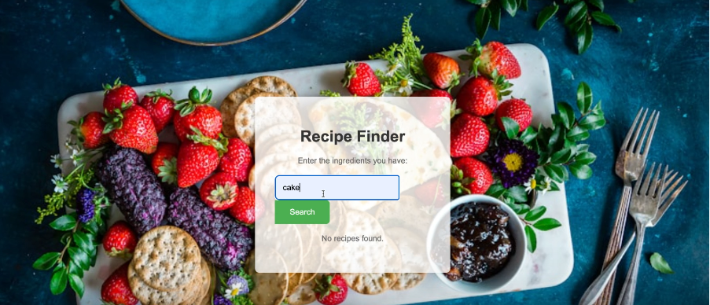
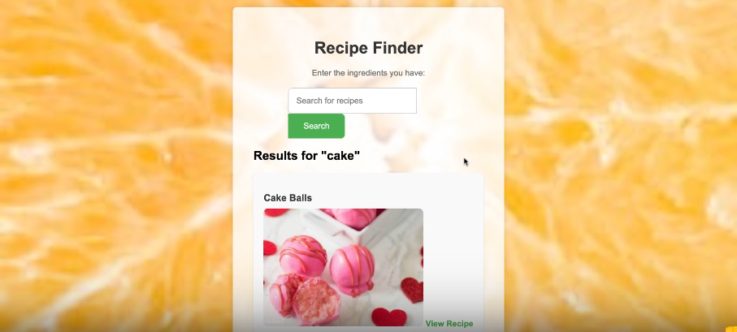
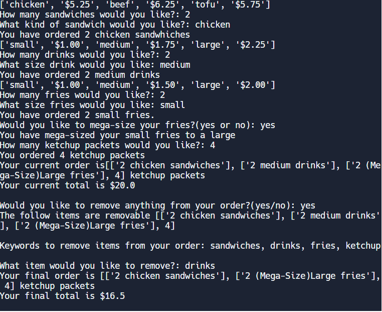

This was my teams entry for the 2024 DEDA Entreprenuership Project: Recipes of Tomorrow. Essentially, our project is a digital cookbook with a twist. The issue we wanted to solve was that people have a hard time or are unable to cook, and when they look through a cookbook they struggle to find things they want and spend to much time searching. Hence our Idea was to create an app that a user could enter any amount of Ingredients they want, and the ingredients can be as specific as they want them to be, based on the Ingredients they have at home and they can cook with. Then our program would search for Recipes that contain the following ingredients and display them along with images and instructions.
 I was a programmer in this project and created the main code function in python, which was then later translated to Flask by our head programmer along with the help of the other team members and I. We needed to use Flask in order to make our program applicable on a website and make it look good. This was definitely our greatest challenge because we were new to Flask and learned it on the spot to create a website and present it as a product for a school-wide competition. However, overcoming this challenge really benefit our team as we developed positive work ethics, time management, cooperation, effective communication, and being open-minded to your team members and their ideas. This project overall really helped us grow as a team and learning how to work with peers.
Github Repository for Recipes of TomorrowElectronic Documentation of Recipes of Tomorrow
This project was one of my first complex text-based coding projects. I used python and created an Online Food Ordering Program with multiple features such as choosing which items to order, quantity of items to order, price counter, item upgrades, and edit order/remove items after the order, a price discount function and a final price counter and order lister. This was my first project using Object Oriented Programming, so it was difficult for me to make this and took a lot and time of effort, But it was fun to learn and really helped me for future projects.
This project was done completely solo and took lots of time and effort. It was quite challenging to make since I was so new to python and object oriented programming at the time. This was my first attempt to create something unique out of the skills I had learned. I had research alot and learn more about Object Oriented programming outside of school to finish this Project. But, when I did I was very satisfied with the result and proud of the work I had complete
Github Repository for Combo Menu ProjectLink to Documentation